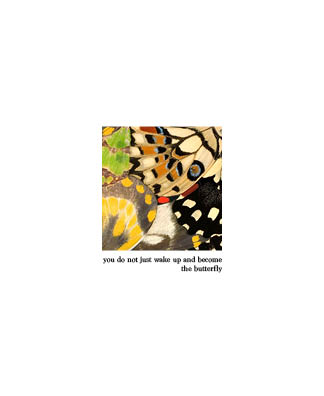
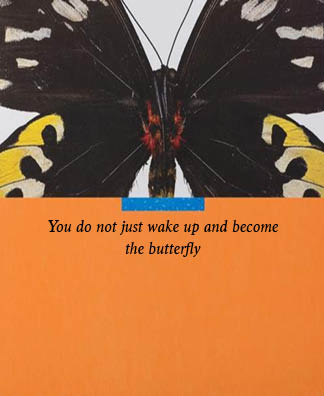
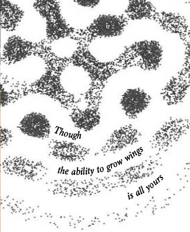
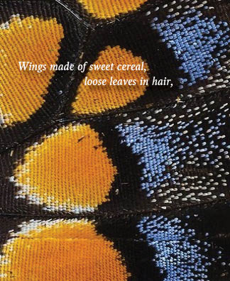
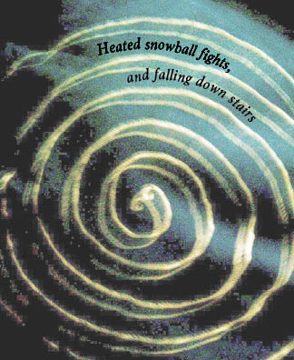
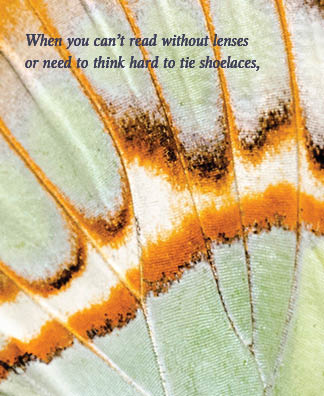
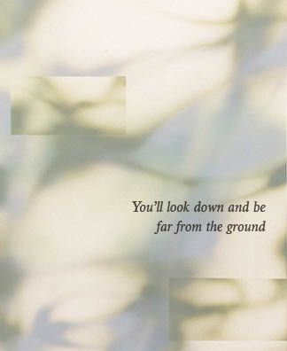
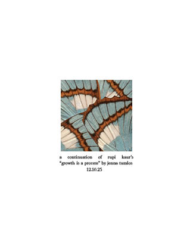

Atmosphere Curator & Creative Problem Solver
Hi! My name is Jenna Tumlos. I'm an undergraduate student from the University of San Diego majoring in Computer Science and minoring in Visual Arts. I'm passionate about promoting diversity and inclusion, building community, and cultivating a culture of unity. I bring unique ideas to life through immersive storytelling, blending the techniques of a sharp and visionary exhibition curator with the strategy and project management of an event coordinator.
After my four years in college, I'm evolving my career around creative innovation beyond the digital world of coding and following my passion for curating lasting experiences that convey true meaning and builds personal connections. I'm seeking entry-level positions where I can contribute creatively that need both artistic vision and execution, especially roles related to art curation, fashion, and event planning.
Current Leadership Roles


Cultivating memorable experiences day by day
March 2026 · Fashion Forward
Ideation & Inspiration
One of the main reasons why Fashion Forward was created was to promote sustainability practices within fashion and beyond. The swap meet was an event in collaboration with the USD Office of Sustainability where students could sell their gently used clothing, accessories, and goods. The goal was to encourage sustainable fashion practices, reduce textile waste on campus, and support student vendors.
Learning Outcome
From hosting previous events, this event in particular aligns the most with our purpose as an organization. As a club focused on fashion, creativity and sustainability, we have a responsibility to promote sustainable practices within the industry and encourage our members to be more conscious consumers. In planning this event, it reminded me of the importance of aligning events with the core values and mission of the organization. The entire day was so wholesome seeing everyone supporting each other through the swap meet, and it reinforced the impact that our club can have in promoting positive change on campus.


March 2026 · Association for Computing Machinery
Ideation & Inspiration
In collaboration with the Entrepreneurship club, I thought about the overlap between entrepreneurs and developers and how we could create an event that would be beneficial for both communities. There has always been this felt divide between people who have ideas and people who can help develop them. In reality, it doesn't need to be that way, and there are so many people who have both the skills and the ideas but just haven't found the right community to express both. I wanted to create a space for students to connect with the chance to meet a partner for future projects or ventures.
Learning Outcome
Working with another organization, there was more hands to plan and execute the event, which made the process more collaborative and smooth in production. I hope to host more events like this in the future to continue fostering a sense of community, collaboration, and innovation on campus.


October 2025 · Fashion Forward
Ideation & Inspiration
Hosted the first creative community gathering on campus for all years and backgrounds. The goal of the event was to create a safe space for students to connect over shared interests in fashion, creativity, and art. We had a moodboard making activity with journals and art supplies, plus free matcha to encourage fun conversation getting to know one another.
Learning Outcome
Bringing an idea to life doesn't get better than this. Something we meerly spoke thoughts about together in a group chat, to actually bringing it to life was surreal. From the positive turnout and feedback, we knew the community was out there and just needed to be brought together. My goal is to host curated events like this, pockets of time in the day to connect with one another and try something new.


Event graphics I designed


From class assignments to passion projects

Spring 2024 · Creative Algorithms
Description
SOLAR CENTER is a simple and personalizable meditation guide that aims to help balance hectic lifestyles with mindfulness through breathwork and exercising creativity.
Motivation
As life grew busier than before, balancing so many responsibilities led me to forget the importance in self care and taking breaks. I wanted to create a design/visual/process that could focus my attention at something almost hypnotizing to relax hyper minds.
Inspiration
Seeing an 80s design of a pixelated horizon amidst finals season, I felt there was quite a peaceful tone to the simplicity of the graphic. I thought the style could be an interesting take on a meditation guide, contrasting yet oddly coinciding with the calming aspects of meditation.
Design & Implementation
The app was built in Java using the Processing library. It features a dynamic horizon that expands and contracts with the user's breath, a timer for meditation sessions, and customizable color schemes. I focused on creating smooth animations and an intuitive interface to enhance the user experience.
Inspiration & Process


Spring 2025 · Object Oriented Programming
Description
Interactive planner with calendar view, to-do list, and a progress chart that visualizes task completion in real time.
Implementation
Follows MVC with Observer and Facade patterns. I built the To Do List, Progress Chart, and led the code cleanup.

Spring 2025 · Object Oriented Programming
Description
Simulator with different elevator types, each with unique behaviors and a scheduler to determine which elevator services each call.
Implementation
I implemented Express and Freight elevators, the Complex Scheduler, and contributed to the Simulator class — all with comprehensive tests.
My imagination in tangible forms
December 2025 · Adobe InDesign
Goal
Create a small book based on a chosen singular subject matter.
Ideation & Inspiration
I first began digging through magazines from Vogue and National Geographic, cutting and pasting bits and pieces together. Walking on campus throughout the years, I've noticed so many butterflies in my path. Though they are figurative symbols in stories and poems, butterflies can be physical symbols in our life as we grow older. Throughout my college career, everyone has told me college flies by in the blink of an eye and I never believed them. Ending my last fall semester and beginning my final term forever, I finally understand what it all means. Thinking about all the butterflies that have flown past me in the recent years, they now remind me of time flying before I can realize it, and also reminds me to take a breath and live in the present.
Learning Outcomes
Learning the history of typography, utilizing text hierarchies, refining my personal style & flare, and rekindling a creative mindset & passion for art.
A Continuation of Growth is a Process by Rupi Kaur
You do not just wake up and become the butterfly, Though the ability to grow wings is all yours. Wings made of sweet cereal, loose leaves in hair, Heated snowball fights, and falling down stairs. When you can't read without lenses and speak in past tenses, Look down and see how far you've flown from the ground.








March 2026 · Relief Reduction
Ideation & Inspiration
My grandmother told me a story of walking home in the Philippines as a child, passing a cave where she saw the golden eyes of a tiger staring back. I wanted to imagine that moment of fear and curiosity.
Learning Outcomes
My first relief reduction taught me to listen to the ink and the press. The process is unforgiving and requires patience and meticulous attention to detail.


December 2025 · InDesign
Ideation & Inspiration
The film invokes mood switches from excitement to frustration and hope to devastation. To consider erasing someone dear from your memory is outrageous — I wanted to capture that emotional complexity in a single visual.
April 2025 · Altered Book
Ideation & Inspiration
"Did you eat yet?" is a masked expression of care in many Asian cultures. I explored food as love through the book "New American Cooking Methods and Definitions," reimagining its contents through my identity as an Asian American.
Learning Outcomes
Bookmaking is precise and personal. The intention of colors, type fonts, and size all contribute to its larger truth. This class helped me appreciate the smallest details.


2024 · Digital
Ideation & Inspiration
Created from frustration and silliness — that feeling of pressing run and hoping something new happens. It won the annual sticker competition, and it felt great knowing other students related.